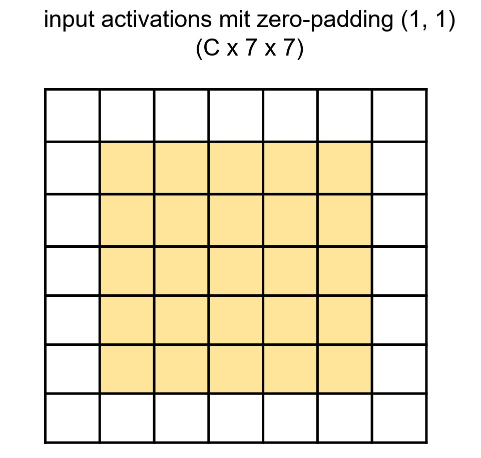

Convolutional Neural Networks
CAS Deep Learning - Computer Vision (Part1)
Properties of Image Data
- High-Dimensional: An RGB image of size \(224 \times 224\) (height, width) has = \(150'528\) values.
- Locality: Nearby pixels are statistically related
- Stability under transformations: Interpretation of an image does not change under many geomoetric transformations.

Multilayer-Perceptrons and High-Dimensional Inputs

Dimensionality of weight matrix \(\mathbf{W}\) scales with input size. \(\mathbf{W} \in \mathbb{R}^{d \times k}\), while \(d\) the dimensionality of the inputs, and \(k\) the number of neurons in the first hidden layer. The columns of the weight matrix \(\mathbf{W}\) (in the first hidden layer) can be visualized to learn what kind pattern a specific neuron has learned.
Multilayer-Perceptrons and Pattern Learning

MLP on example image.
Can an MLP successfully learn patterns in images \(\mathbf{x}\) that are permuted with a permutation matrix \(\mathbf{P}\), i.e. \(f(P(\mathbf{x}))\)?
Example Invariance
Example where invariance is required:

When objects in the input translate spatially, the output (in this case the classification of the images) does not change. The model \(f(\mathbf{x})\) is thus invariant to spatial translations.
Example Equivariance
Example where equivariance is required:

When objects in the input (first row) translate spatially, the detections (bounding boxes) change accordingly (bottom row). The model \(f(\mathbf{x})\) that produces the bounding boxes is thus equivariant with respect to spatial translations.
History: Experiments on Cats

Illustration Source
Visual Cortex

Representation of transformations in the visual cortex. Source: Kubilius (2017)
Convolutional Neural Networks

The activations of a ConvNet architecture. The input image is on the left, and the predictions are on the right. Source: Li (2022)
Convolution on RGB Images

Source: Prince (2023)
Convolutional Layers

Source: Johnson (2019)
Convolutional Layers

Source: Johnson (2019)
Convolutional Layers

Source: Johnson (2019)
Convolutional Layers

Source: Johnson (2019)
Padding
What is the output dimensionality when convolving a 3x3 kernel?


Padding

Left: Input (Yellow) with Zero-Padding (white border), Middle: Filter, Right: Output.
Kernel-Size

Kernel-Size

What is the difference between using 3x3 vs 5x5 kernels? What is the same?
Stacking Convolutions

Receptive Field

Using a 5x5 kernel
Receptive Field

Using a 5x5 kernel and two layers
Receptive Field

Receptive Field

Architecture
Sequence of layers and their hyper-parameters defines an architecture.

VGG - Source: Prince (2023)
Learned Filters

Source: Krizhevsky, Sutskever, and Hinton (2012)
Downsampling
Spatial downsampling is often a desired property of convolutional layers.
We can achieve that by choosing a stride \(\gt 1\).
However, there are other options, such as pooling layers.

a) Sub-Sampling, b) Max Pooling, c) Average Pooling . Source: Prince (2023)
Upsampling
Sometimes we need to increase the spatial dimensionality of our activation maps.
What would be an example when we want to do that?

Global Average Pooling
Global Average Pooling is often an important component. It computes the average of the activations along the depth dimension, reducing activation maps from (C x H x W) to (C x 1 x 1). This is useful for directly modeling logits in a classification problem with C classes, enabling architectures that completely eliminate fully-connected layers.

Global Average pooling, input (left) and output (right).